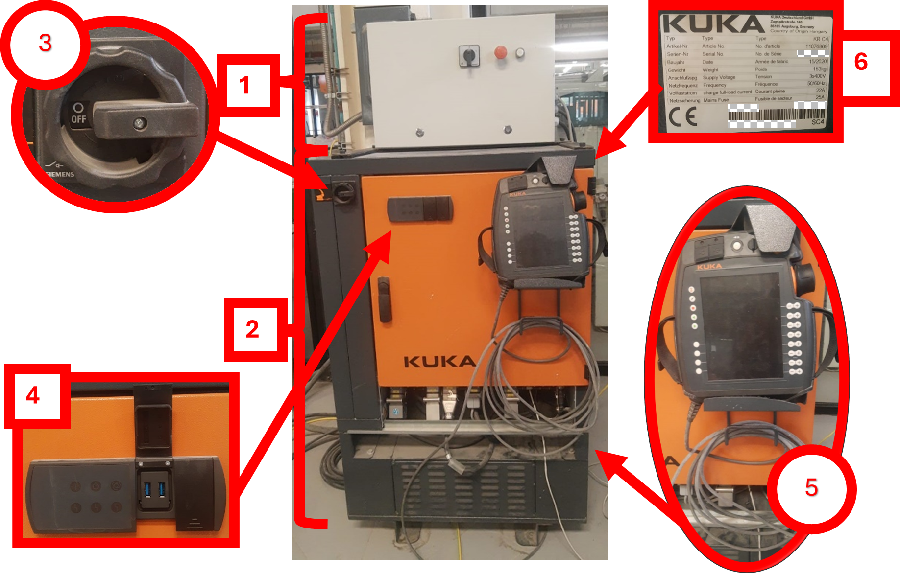
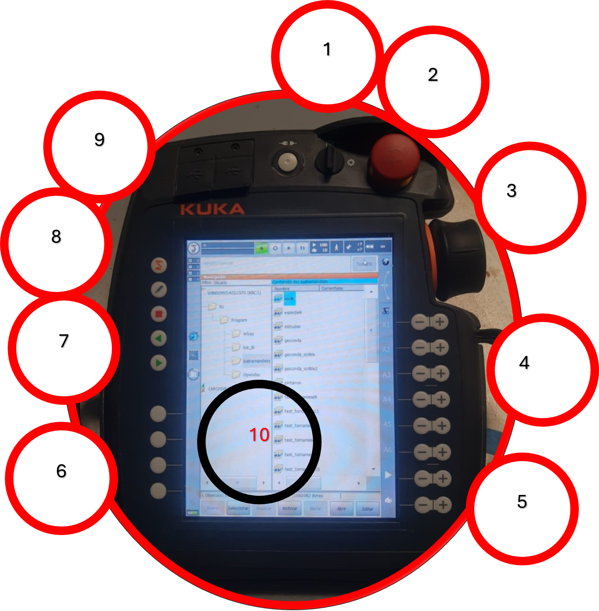
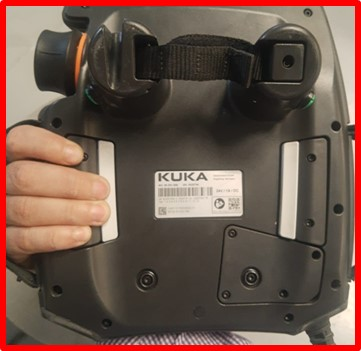

My Blog

Nonumy ipsum takimata et sanct
01-Jan-2045
Web Design
15 Comments
Descargo de responsabilidad:
LAHV Design es un proyecto personal sin fines de lucro, todos los recursos (redactados y/o descargables) aquí compartidos son libres de uso, sin embargo no me hago responsable de ninguna manera de las decisiones que terceros tomen con dicho recuso.
Anatomia Del KR-C4
El KUKA Robot Controller KRC por sus siglas en inglés, es el gabinete de control donde el robot almacena las posiciones de los motores, la memoria del sistema operativo, controladores de motor, Etc. Aquí es donde encontramos el Tech Pendant o tableta de operación. Las conexiones USB y la perilla de encendido y apagado del equipo.
- Gabinete accesorio
- Gabinete general
- Perilla de encendido
- Panel de estado.
- Teach pendant
- Placa de datos
Este modelo en específico cuenta con un variador de velocidad para el control de un spindle o taladro para maquinados.
- Encendido spindle
- Paro de emergencia
- Botón
Encendido
Para poder encender el equipo es necesario girar la perilla de encendido un cuarto de vuelta en sentido horario
Una vez encendido el panel de estado del gabinete estará en color verde sólido.
Apagado
Para poder apagar el robot es necesario primero apagar el Teach pendant entrar en modo experto. Ir al menú inicio>Apagar (shutdown)>PC de control apagado (PC control Shutdown)>confirmar operación con SI
Una vez apagado el panel de estado indicara una luz intermitente en color blanco.

Ahora para poder terminar gira la perilla un cuarto de vuelta en sentido antihorario.
Anatomia del Teach Pendant
El Teach pendant también conocido como SmartPAD es una tableta táctil móvil conectada alambricamente al gabinete de control usualmente esta viene con un cable como de 10 metros para poder movernos con facilidad alrededor del robot mientras lo sostenemos.
frente
- Llave de modo de operación
- Paro de emergencia
- Mouse de 6 ejes.
- Teclas de movimiento.
- Teclas de velocidad. Velocidad de programa y velocidad manual.
- Teclas de estado.
- Teclas de programa. Sirven para detener el programa (modo auto), avanzar (modo manual y auto) o retroceder el programa (modo manual).
- Teclado en pantalla.
- Tecla inicio
- Pantalla táctil.
Trasero
- Botón de seguridad.
- Tecla avanzar programa.
Este dispositivo está diseñado para personas tanto zurdas como diestras, por lo que los botones de accionamiento y de avanzar programa en la parte trasera están colocados de manera simétrica.
Modos de sujecioón del Smartpad
El Smart pad se puede sujetar de diferentes maneras.
El botón en el dedo índice activa el accionamiento de los motores y el botón verde en mi dedo pulgar avanza la reproducción del programa, está en mi opinión es la forma más cómoda para reproducir el programa en modo T1.
De esta forma mi pulgar queda en las teclas de accionamiento y mis dedos medio y anular quedan sobre una de las teclas de accionamiento de los motores.
En mi opinión esta es la forma más cómoda de mover el robot a posiciones especificas en modo T1
Anatomía del robot y tornamesa.
En esta sección describiremos las partes físicas del robot con respecto a la teoría vista en el artículo anterior.
Los ejes del robo se encuentran en cada articulación y se nombran desde la base anclada al piso con la letra A de Axis y la tornamesa esta junto al robot y cuenta como un eje externo y 7mo eje al mismo tiempo este esta nombrado con la letra E de External axis.
Anatomía de la interfaz
El Kuka System Software es el sistema operativo nativo de todos los robots de esta marca, y sirve como interfaz para el operador.
Aquí se describen las teclas y menús contextuales de la interfaz del robot.
- Tecla inicio
- Barra dirección y nombre de programa
- Indicador estado de accionamiento
- Indicador estado programa
- Indicador modo de operación
- Indicador de velocidad (programa y manual)
- Indicador herramienta y base actual.
- Indicador de configuración del mouse
- Indicador de configuración de teclas de desplazamiento
- selector de velocidad de programa y velocidad manual.
- Barra de botones de acción
- Barra de botones de acceso rápido (nombre del proyecto de workvisual, fecha/hora y grupo de usuarios)
- Contador de advertencias y notificaciones
- Barra de notificaciones
- Estructura de carpetas
- Contenido de las carpetas.
La tecla de inicio virtual tiene el mismo efecto que la tecla de inicio física, su función es desplegar el menú de inicio del robot.
Modos de operación
Los modos de operación hacen referencia a: si el operador estará manipulando cada línea del programa que se estará ejecutando o si el operador solo inicia la ejecución del programa y se retira del radio de operación del brazo robótico.
Existen 3 modos de operación Manual(T1), Automático(AUT) y Externo (EXT). Ahora vamos a ver los modos de operación del robot primero y las formas de moverlo después.
Para poder seleccionar el modo de operación es necesario girar la llave selectora. Ubicada en la parte superior del smartPAD, se debe girar en sentido horario presionar uno de los 2 modos (T1 o Aut) y regresar el selector a su posición original.
Modo Manual (T1)
En el modo manual podremos crear nuevos programas y ejecutar programas escritos directamente desde el SmartPAD o por software de terceros, sin embargo, esta modalidad tiene algunos detalles que debes tener en cuenta.
Este modo tiene una reducción de velocidad programada, lo que quiere decir que el robot no se moverá a la misma velocidad que en modo automático.
Y por seguridad del operador por lo menos uno de los cuatro botones de seguridad y uno de los 3 botones de avance de programa deben ser presionados al mismo tiempo.
Este es el icono correspondiente al modo manual en la parte superior central de la interfaz táctil.
Modo Automático (AUT)
En este modo podremos ejecutar programas sin supervisión de un operador.
La interfaz táctil del SmartPAD se ve exactamente igual excepto que las teclas de desplazamiento de la mano derecha están deshabilitados al presionar las teclas de seguridad y el icono en la parte superior indica AUT.
Mover Robot con sistema de ejes.
Para comenzar el robot debe estar registrado como usuario operario o superior en la interfaz.
la forma de entrar a esta ventana es desde la tecla de inicio>configuración>grupo de usuarios.
Yo voy a estar operando el robot con el mouse por comodidad, pero también puedes usar las teclas. Para configurar el modo de movimiento tienes 3 opciones desde los ejes, desde el mundo, desde la herramienta o desde la base.
Estos son los modos de movimientos tanto en el método de las teclas de desplazamiento (izquierda) como en el mouse de 6 ejes(derecha).
Seleccionamos el icono que dice ejes y nota que en ambos casos los indicadores de cada tecla cambian de nombre.
Ahora presionamos una de las teclas de seguridad y mantendremos ese botón presionado.
veremos cómo se encienden los iconos de cada eje indicándonos que el accionamiento de los motores esta activo y disponible, también puedo darme cuenta en el icono superior color verde acaba de cambiar al símbolo universal de encendido.
En ese momento podemos comenzar a presionar las teclas con el símbolo + para mover en una dirección y con la tecla con el símbolo – para ir en la dirección contraria
Uso del mouse espacial
El mouse 3d o mouse espacial o mouse 6a es una especie de hibrido entre un ratón de ordenador y un joystick de simulador virtual

Puede moverse en los ejes X, Y y Z pero también rotar en los ejes A,B y C.
La preferencia entre el uso del mouse o las teclas de desplazamiento es puramente comodidad y gusto del operador. Sin embargo, en mi opinión personal es mucho más fácil dominar primero el movimiento del robot a través de las teclas de desplazamiento para poder después continuar hacia el uso del mouse espacial.
Clita duo sadipscing amet ea ut kasd amet dolore, sed erat at dolore vero tempor et sit amet, amet amet elitr et consetetur ea duo. Gubergren tempor rebum clita at sit diam. Ea sadipscing voluptua et sit diam diam sed, gubergren magna ipsum lorem clita dolores nonumy dolor. Gubergren duo invidunt elitr amet labore dolores justo sanctus nonumy. Accusam diam tempor at ea clita dolores dolor et ipsum, dolor voluptua consetetur gubergren sit, no consetetur kasd vero invidunt clita dolore elitr eos, accusam amet et labore sed sadipscing accusam labore dolores. Eirmod no lorem sed dolor nonumy consetetur tempor sed.
Est dolor lorem et ea

Diam dolor est labore duo invidunt ipsum clita et, sed et lorem voluptua tempor invidunt at est sanctus sanctus. Clita dolores sit kasd diam takimata justo diam lorem sed. Magna amet sed rebum eos. Clita no magna no dolor erat diam tempor rebum consetetur, sanctus labore sed nonumy diam lorem amet eirmod. No at tempor sea diam kasd, takimata ea nonumy elitr sadipscing gubergren erat. Gubergren at lorem invidunt sadipscing rebum sit amet ut ut, voluptua diam dolores at sadipscing stet. Clita dolor amet dolor ipsum vero ea ea eos. Invidunt sed diam dolores takimata dolor dolore dolore sit. Sit ipsum erat amet lorem et, magna sea at sed et eos. Accusam eirmod kasd lorem clita sanctus ut consetetur et. Et duo tempor sea kasd clita ipsum et. Takimata kasd diam justo est eos erat aliquyam et ut. Ea sed sadipscing no justo et eos labore, gubergren ipsum magna dolor lorem dolore, elitr aliquyam takimata sea kasd dolores diam, amet et est accusam labore eirmod vero et voluptua. Amet labore clita duo et no. Rebum voluptua magna eos magna, justo gubergren labore sit voluptua eos. Dolores et no stet magna et gubergren amet dolor sit, lorem dolore est vero et.
>>>>>>> parent of 1fb6eef (ojala suba porque esta pesado lahv 20-07-24)© Your Site Name. All Rights Reserved. Designed by HTML Codex